Differential Carrier: Service and Repair
InspectionRefer to Differential Assembly for removal of the Differential Carrier.

1. Remove the tapered roller bearings.
2. Install the L. driveshaft and intermediate shaft in the side gears.
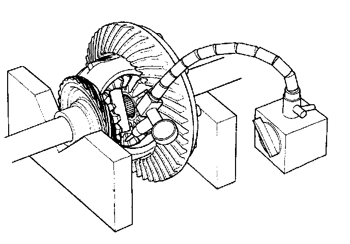
3. Measure the backlash of both pinion gears. Backlash should be 0.05 - 0.15mm (0.002 - 0.006 in).
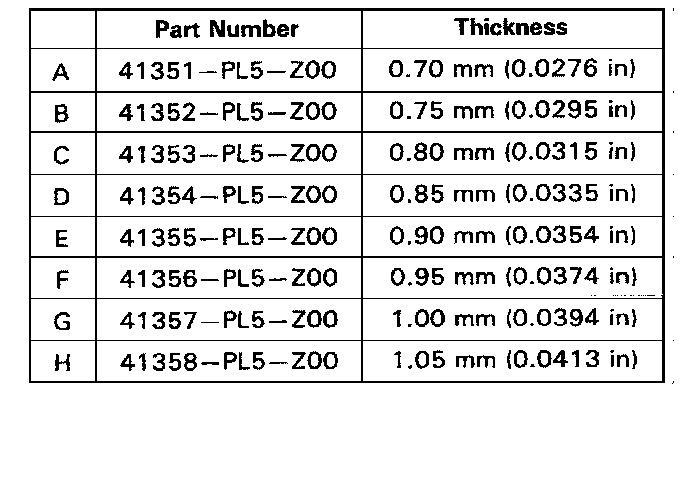
4. If the backlash exceeds the specification, select new pinion washers from the table above to bring it within standard. Note that the washers must be of equal thickness.
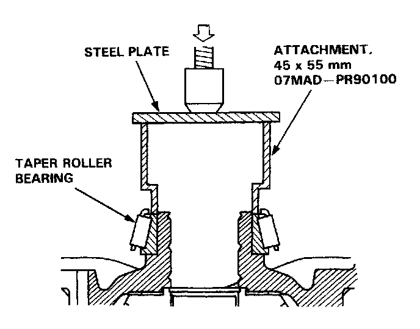
5. Install the tapered roller bearings using the special tools as shown above.
Disassembly
1. Remove the tapered roller bearings.
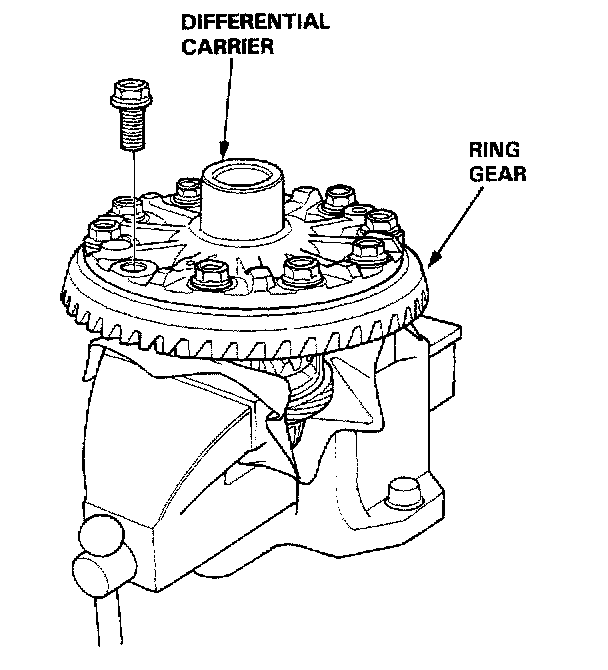
2. Remove the ring gear.
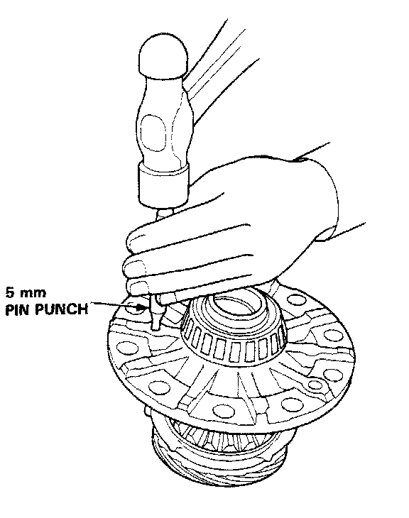
3. Drive out 5mm roll pin with a pin punch.
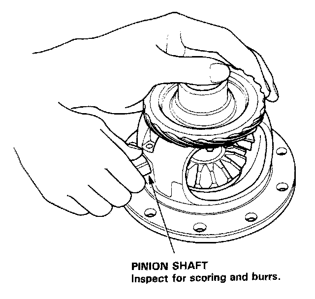
4. Remove the pinion shaft, pinion gears, side gears, thrust washers, and thrust shims.
5. Wash the parts thoroughly in solvent and dry them with compressed air. Inspect all parts for wear or damage and replace as necessary.
Reassembly
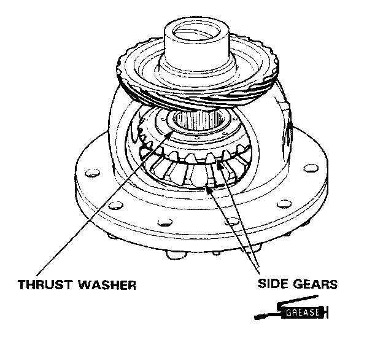
1. Coat all gears with molybdenum disulfide grease on all sides then install the side gears and thrust washers in the differential carrier.
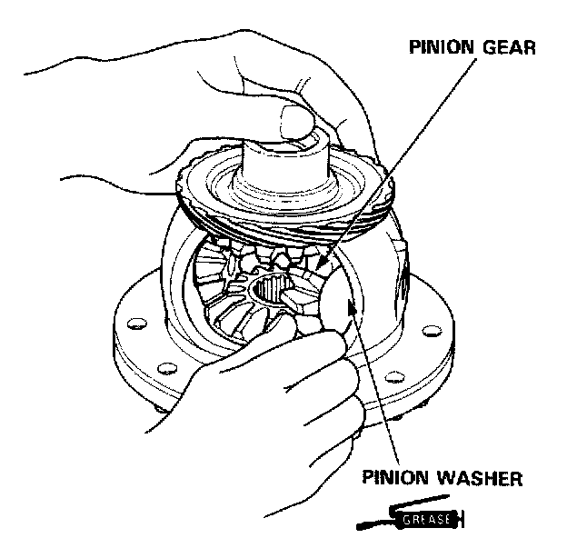
2. Set pinion gears in place exactly opposite each other in mesh with side gears, then install a pinion washer behind each one. Washers must be of equal thickness.
3. Rotate gears as shown until shaft holes in pinion gears line up with shaft holes in the carrier.
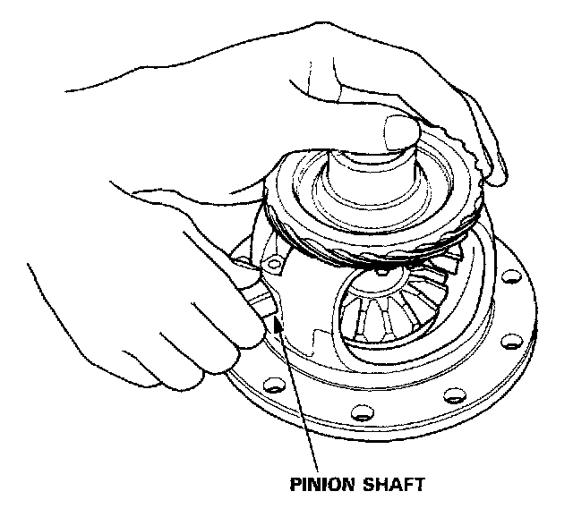
4. Insert pinion shaft and align spring pin holes in one end with matching hole in carrier. Align spring pin holes.
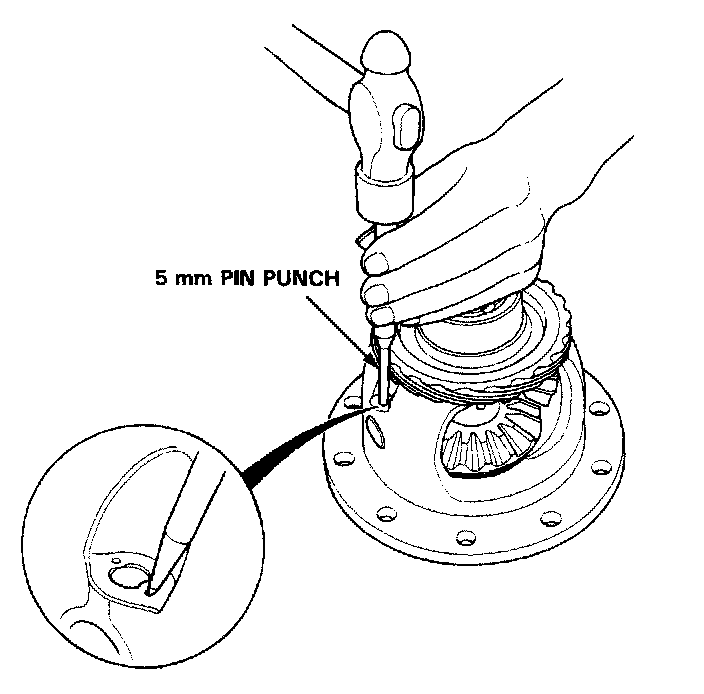
5. Drive in a new 5mm roll pin with the pin punch.
6. Check the backlash of both pinion gears again, adjust as necessary.
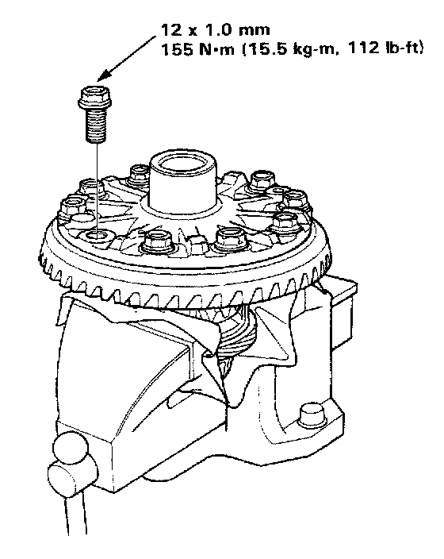
7. Install the ring gear.
8. Torque the bolts in a criss-cross pattern to 155 Nm (112 ft.lbs).
9. Install the tapered roller bearings.